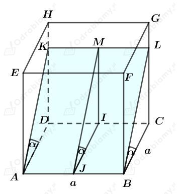
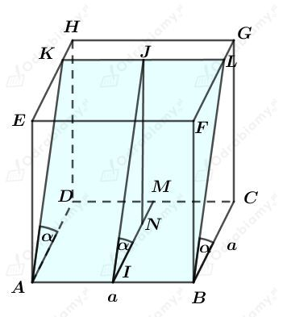
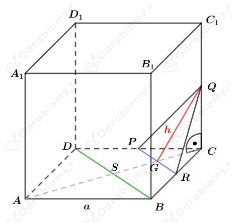
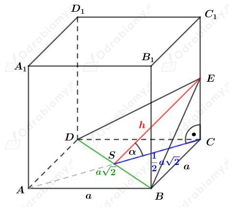

a)
Rysunek:
(cos𝛼>cos45⁰, więc krawędź KL zawiera się w ścianie DCGH)

Wiedząc, że
mamy:
Przekrój to prostokąt o bokach AB oraz BL. Obliczmy pole tego przekroju. Mamy:
b)
Rysunek:
(cos𝛼<cos45⁰, więc krawędź KL zawiera się w ścianie EFGH)

Wiemy, że
Korzystając z jedynki trygonometrycznej mamy:
Dalej mamy:
Przekrój to prostokąt o bokach AB oraz BL. Obliczamy pole tego przekroju. Mamy:
Rysunek:

Punkty P, Q, R są środkami krawędzi tego sześcianu.
a)
Wiemy, że a=12.
Zauważmy, że
oraz odcinek PR stanowi 1/2 długości tej przekątnej
a odcinek GC stanowi 1/4 długości tej przekątnej, czyli
Korzystając z twierdzenia Pitagorasa dla trójkąta GCQ mamy:
Wyznaczmy pole trójkąta PQR. Mamy:
b)
Wiemy, że przekątna tego sześcianu ma długość 2√6. Korzystając ze wzoru na długość przekątnej sześcianu mamy:
Zauważmy, że
oraz odcinek PR stanowi 1/2 długości tej przekątnej
a odcinek GC stanowi 1/4 długości tej przekątnej, czyli
Korzystając z twierdzenia Pitagorasa dla trójkąta GCQ mamy:
Wyznaczmy pole trójkąta PQR. Mamy:
Rysunek:

a)
Wiedząc, że
mamy:
Wyznaczmy pole trójkąta DBE. Mamy:
b)
Wiedząc, że
mamy:
Korzystając z twierdzenia Pitagorasa dla trójkąta SCE mamy:
Wyznaczmy pole trójkąta DBE. Mamy: